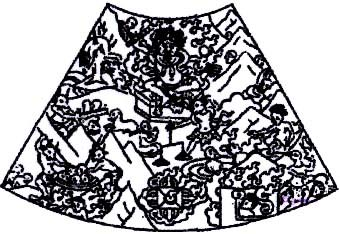

《生死之轮》六道轮回图释义
大藏寺 祈竹仁波切 开示
{kind=link}
点击上图有更高清大图显示
生死之轮图的起源
衲由今晚开始一连数天，应求为大家讲述有关西藏佛寺中常见的生死之轮绘画的种种。为了能得到最大的闻法利益，听者应在听法前思维：「为了利 益一切众生，我必须成佛；为了成佛，我必须学习成佛之道；故此，我现在要好好地听受佛法！」生死之轮，藏文中称为「轮回之轮」(Sipay korlo，梵语Bhava-chakra)，但西方人称它为「生死之轮」或「生命之轮」（The wheel of life, the wheel of life and death ）等（注：汉传佛教中称其为「五趣生死轮」、「五道轮」、「生死轮」及「十二缘起图」）。这种图画，我们常常会在西藏寺院的外墙上见到。对佛法不理解的 人，只会以好奇的目光欣赏它，却不知道这幅画其实蕴藏着描述众生生死轮回、受苦及脱苦的教法在内。
在佛法上，我们必须注重传承。既然我们要修佛法，就当然必须谨慎地决择甚么是佛所开示的法、甚么不是佛所开示的法、甚么是有传承的正法和甚 么是似是而非、某些人自创的无传承「佛法」！换言之，我们不要大意，必须确定自己所听、所学、所修的法的而且确是佛陀所开示的。为着这个原因，衲现在先讲 一讲生死之轮图的传承，亦即这种图画的来源。
在佛陀于人间示现的年代，在印度的中部摩揭陀国(Magadha，中印度当年十六大国之一，即今之Bihar近佛陀成道的地方)，有一座城 叫做「王舍城」(Raja Girha，佛陀最常说法之处，即今之Rajgir，城境内有一山称为「灵鹫山」，即佛陀开示《般若心经》的圣地)。摩揭陀国王舍城的国王名为「频毗娑罗 王」(Bimbisara，亦译作「影坚王」、「形牢王」、「瓶沙王」及「影胜王」等)。这个国王与佛教有很深的渊源，他不但是第一位皈依佛陀的国王，佛 教史上的第一座精舍 — 竹林精舍(Venuvana) — 亦是由这位国王所供养予僧团的（注：见《因果经》中记载）。在印度有另一个大城，名叫「胜云城」(Rauruka)，此城则有一位称为「优填王」 (Udrayana，亦译作「优陀延王」及「乌扎衍那王」等)的国王。上述的两位国王，是甚有交情的朋友。频毗娑罗王在现在所说的典故发生时，早已皈依了 佛教，而优填王则未信佛教，亦未见过释迦牟尼本师。
王舍城与优填王所管辖的地方，堪称国富民强。两个城之间常常有商人来往作买卖，两位国王就常常托来往两地的商旅代捎书信及礼品予对方。在多 次互相送赠了珍宝及上等布料后，优填王把一件镶满了各种宝石的珍贵铠甲赠予频毗娑罗王。这套珍贵的盔甲，不单镶满了多种宝石，更有防火、防毒及护身的功 能，所以它价值连城，令当时的见者赞叹不绝。在收礼后，频毗娑罗王召集了大臣，向他们说：「这么贵重的大礼，朕应当如何回礼呢？朕必须以一件同等的厚礼或 更有价值的礼品回赠，你们快帮忙想一想吧！」各大臣纷纷提出了自己的建议，但这些建议都不太恰当，令国王伤透了脑筋。这时候，一位属婆罗门阶级的大臣开口 说：「我王！三界之中所有珍宝也比不上佛陀！佛陀现正在我们国境中驻锡，我王何不以佛陀之身相作画回礼呢？这份礼既吉祥，且又能令优填王积聚福德！」，频 毗娑罗高兴地决定：「就这样办吧！」
在佛陀听到频毗娑罗王的要求时，祂在应允之余，还授记说：「优填王见画时，将生大信心及见谛！」在画师为佛陀作画时，由于佛陀的圣身自然放 出光明万丈，又因画师出于敬心而未敢直望佛身，绘画便变得极难进行下去了。后来，佛陀把自己的身影投在画布上，由画师依祂的身相比例勾划身形，再为佛画上 色。画师又依佛之开示，在佛身相图画下，加上了开示皈依、三学、六道生死轮回及十二因缘教法的生死之轮图。这幅布画，被涂上香料而包于上好的丝布内，再放 入一个金盒之中。金盒又被放在更大一点的银盒中；银盒又复被收藏于更大的红铜盒中。频毗娑罗王写了一信，派使者把信交予优填王，请他在城中张灯结彩，再由 大象、步兵及战车等四军陪同，出城十一哩恭迎佛画。这幅包装好了的佛画，便被供在一匹大象背上，送到了在其城境外恭迎的优填王手中。
本来不信佛的优填王在恭敬地展开佛画后，便仔细地观看图中的内容及参想画中偈文的内义，同时亦在心中禅思十二因缘的顺逆流转过程、四谛及六 道轮回之苦。由于佛陀的加持、优填王的过往善业力及因缘成熟，优填王在当下便证得了阿罗汉圣人的预流果位境界（注：一种修行的境界）。此后，这位国王为佛 教亦作了极大的贡献。他的生平故事，可见于《大藏经》中的戒律教法等典着中（注：汉文《大藏经》中之《佛说大乘造像功德经》、《阿含经》及《四分律》等， 俱有有关优填王之章句片段）。衲在几年前曾往印尼的浮罗布多(Borobudur)大塔朝礼，留意到塔上的石刻中亦有极多有关此王生平的雕刻图像。
由上述典故可见，生死之轮图并非西藏人的发明，而是源自古印度佛陀的时代（注：在印度阿旃多石窟第十七号窟殿中，便存有古老之生死之轮图 像）。在优填王看画证道后，古印度的佛教寺院（乃至后来的藏传佛教寺院）便开始有把这幅画绘于寺门外的传统，以令来访或路过的人见画而心念画内含藏的教义 （注：见汉文《大藏经》之《根本说一切有部毘奈耶》卷三十四：「尔时世尊告阿难陀…是故我今敕诸苾刍，于寺门屋下画生死轮…应差苾刍于门屋下坐，为来往诸 人婆罗门等，指示生死轮转因缘…」及《释氏要览》卷三：「毘奈耶云：给孤长者造寺后作念若不彩画，便不端严，即白佛。佛言，于门两颊…次一面，画五趣生死 轮…」）。
编者按：五趣生死轮图
在汉地，虽然并未及其在古印度与西藏之普及，但由《法苑珠林》卷二十三及《诸寺缘起集》兴福院条史料中，可知此图在汉地乃至日本亦曾有某程度上的流传。此外，汉传佛教及日本佛教中各种版本之十法界图（亦称「十界图」及「十界大曼荼罗」）亦源出于五趣生死轮图（注：参考宋．遵式《天竺别集》卷二及王日休《龙舒增广净土文》卷八）。
{kind=link}
生死之轮图的法义
这幅图像，并不用于禅修观想用途，其作用乃是为了提醒行者业力、因果等教法，令观画者对佛法生敬信心、对轮回等教法生出理解及令修行者生出修行的大决心。
生死之轮图的法义概说
生死之轮图，是显示凡夫众生在六道中生死轮回的图解，它同时亦教授了苦的来源、脱苦的方法及脱苦的自在境界。
我们有一天必定会死，但在死后，生命却并不终结。在这个肉体灭亡后，我们的意识会先进入一个叫作「中阴」的阶段，然后便再次轮回投生，得到 新的肉身，以另种生命形式延续生存。我们佛教常常谈及轮回，今天我们又在谈轮回之图像，哪到底是谁在轮回呢？在哪¨轮回呢？为甚么他们在轮回呢？简单地 说，凡夫众生的心识便是正在受困于轮回中的生命；由三善道及三恶道组成的六道便是凡夫众生轮回被困的处所；凡夫众生因为烦恼而造业，又因造业而受生、受死 及再次受生，经历似无止境的轮回、轮转，在这六道中转来转去，不能自在或出脱。佛法中又常提及「自在」这个名词，「自在」又是甚么呢？「自在」即「自由」 的意思。我们一谈及自由，就以为不要干活、不用上班或没人管束便是自由，其实这些都不是真的自由、真正的自在，因为这些处境都仍有局限性 - 我们没有不死的自由、没有不病的自由、没有不再轮回的自由…。佛法中所提及的自在，是指真正的自由、自在、自主，亦即不再受生、受死、受病、受中阴、受轮 回所困的境界。这亦即超出了生死轮回、业力及烦恼的束缚和枷锁的解脱自在境界。这才是真自由、真的自在。
人生在世，辛辛苦苦的为的是甚么呢？其实所有人，乃至所在生命，追求的不外乎是离苦得乐，亦即脱苦的自由。不论你追求的是金钱、名位或其它 的甚么，归根究底你追求的便是离苦得乐的自由。问题是：穷一生地去追求后，谁得到了真正的自由呢？有谁能达到拥有不病、不苦、不死的自在境界呢？大家不妨 在这一点上好好想一想。佛陀开示说，烦恼与业力是我们受苦及受轮回的真正原因，修持正法是我们脱苦而得自在解脱境界的方法。
生死之轮，正是开示我们凡夫不断地在六道中轮回之境况、过程及原因，并开示脱离这种无奈境况的方法。虽然六道之苦况包罗万有，但其大概情况已全包含在此图像之中了。
生死之轮图的法义分说
生死之轮图像有多个部份，我们可以看到其中央有一个阎摩鬼王口噬掌持着生死大轮，这部份开示六道轮回中之苦的本质（四圣谛中的苦谛教法）及 这些苦的根本来源（四圣谛中的集谛教法）。在这部份的上方，有一尊佛以手指着两段偈文及一个月亮。佛手指偈文开示灭苦及脱出轮回苦海的方法（四圣谛中的道 谛教法）；月亮则描述诸苦息灭的自在境界（四圣谛中的灭谛教法）。现在衲将把这图的各部份逐一分拆开来作解说。
生死之轮图主体
我们先看生死之轮图的主体部份，亦即阎摩鬼王手持巨轮的图中央部份。
生死之轮图主体概说
我们在死后，会经历中阴阶段，然后又投生为另一生命形式，然后又再经历死亡、中阴、投生…的循环。这便是生命的轮回。但我们并不一定再生为 人，而是可能再投生于六种生命形式中之任何一种，这六种生命形式称为「六道」。生命便是从无始的过去以来，不断一次又一次的投生、死去、再投生、死去…周 而复始，不可出离。是甚么令我们不断地经历生、死、中阴、生、死、中阴…的循环而困于六道中轮回呢？这是因为我们的烦恼及业力。我们因贪、瞋、痴（三毒） 等烦恼而造作种种业，所以便造作了一连串的因缘，令自己不断轮回受苦。生死之轮图主体部份，包含了六道之内苦的本质及众生之苦的来源，亦即佛法中四圣谛教 义的苦谛及集谛。这一部份，开示了三毒等烦恼、生死及中阴过程、六道轮回之情况及十二因缘等教法。
生死之轮图主体分说
阎摩鬼王手持的大轮，可以分为四层圆圈排列。
最内圈
在图的正中央，亦即大轮的轴心部份，是一个小圆圈，圈内有三种畜牲：鸽、蛇及猪；蛇及鸽由猪口而出。
这三种动物，分别表义贪、瞋、痴这三毒。这三毒念，是凡夫的根本烦恼，也是令我们不断生死轮回的根本原因。
为甚么鸽表义贪欲呢？这是因为鸽的特征是贪欲无足，这是传统的说法。衲有一个研究生物行为的徒弟说，现代的西方动物学家经研究后，发现鸽是 所有生物之中性交频率最密的，这似乎与佛教传统说法不谋而合。在某些生死之轮图中，画师会绘上其它的鸟类表义贪欲，但这些画法是不正确的。在佛经上教授绘 画此图的开示中，都指明了应以鸽（而非其它鸟类）表贪。
蛇是瞋恨的表义。如果你以手指头轻轻碰一下一条蛇，牠马上便会发怒、马上便会咬人还击，所以画中便以蛇代表瞋恨。
一头猪不会分辨好、坏、干净或骯脏，牠只会狼吞虎咽地把任何东西吃下肚子。在平时，猪也只懂吃、睡及拉粪，其它就甚么都不干了。如果你牵一 头猪往花园游玩，牠绝不会好好的坐在一旁欣赏景色，反而会到处捣乱，把花、草等都从泥土¨统统掘出来。在这世上有千千万万种动物，但在不同国家、语言及文 化中，不约而同地以猪来形容笨人，例如西藏人及汉人在骂别人蠢的时候，都会说：「你这个人笨得像猪一样！」，可见以猪来表义愚痴的确是贴切的。
由 于我们凡夫最根本的愚痴，我们才会对外境事物生出贪欲，又在得不到欲得的事物时生起瞋恨心，这便是贪及瞋源出于痴的情况。在图的中央最内圈中，蛇及鸽都画 成由猪的口而出，这就正是表义贪欲及瞋恨源出于愚痴。在某些画中，画师把三种动物画成排为一圈的模样，猪咬蛇尾，蛇咬鸽尾，鸽又咬着猪的尾巴。严格地说， 这并不是最传统、最正确的画法，但这种画法也有它的表义：三种动物互咬联成一环，表义贪、瞋、痴此三毒念并非单独运作，而是相互串连引发的。
三毒概说
前面已经说过，三毒等烦恼及业力是令众生不断地在六道苦海中生死流转的原因。这也就是说，轮回的原因及苦的来源便是烦恼及业力。如果我们想灭苦，单单抱怨是没作用的，我们必须把苦的根源连根拔起，所以我们有必要了解烦恼与业力的运作。
在烦恼与业力二者之间，造成我们不断轮回的主要原因是烦恼。甚么是烦恼呢？它们是各种令我们的心不安及狂妄起伏的元素，例如贪念、瞋恨、愚 痴这三毒等等。假设我们只有过往曾积作之业，但却没有生起我执等烦恼，单单业力是不可能令我们再次投生的，这就像是一颗没有水份的种子，无法发芽生长。反 过来说，如果你过往并未作任何业，但只要你一天还未断除烦恼，你便会因烦恼的驱使而即刻开始种业，从而凑足了轮回、受生、受苦的因缘。
三毒分说
烦恼的种类可说是数也数不尽，我们今天主要是把它们归纳为贪、瞋、痴这三毒念来讲说。这三种心态是一切烦恼的根源。
贪
三毒中之「贪」是指贪恋可爱的事物。当我们见到一位美丽的异性时，便会想：「啊！我要和这个人在一起！」同样地，我们对财产、名利、饮食等等都会生起贪欲。又如垃圾堆中的苍蝇，牠们飞来飞去，在垃圾堆中穿插，这也是因为牠们的贪欲。
大家可以幻想一下：我们本来是心境平静地逛街的，然后我们的眼角不经意地瞄到了店铺展示窗中的一件饰物，觉得它实在漂亮。我们忘记了逛街的 动机，驻足在店前凝望这件小东西。有些人可能会不加思索马上把它买下来。另一些人则可能没有钱，便只好回家去了。没买下它的人回家后，可能不思茶饭，心中 想这小东西的美丽，不能自已，甚至在梦中也想着要得到它。买了这东西的人，会把它带在身上展示，看完又再看，彷佛怕它会逃走似的！这便是贪欲了。
我们的贪欲是无穷尽的。我们喜欢看漂亮的东西、听悦耳的音乐、嗅好闻的味道、吃可口的食品、穿柔软的衣物…总之我们希求各种外界的事物来满 足视觉、听觉、嗅觉、味觉及触觉等等，而这些欲求是我们永远不觉满足的。不论我们已得到了多少，我们仍不断渴求更多。就以金钱为例：你有一百元的时候便想 得到一千元；在拥有一千元的时候，你又想要一万元。即使是世上最富有的人，仍然不觉满足，他仍然不会停止追求更多的财富。正因为这种无止境的贪欲，我们便 造作各种的业，种下了种种不同的业因，所以便不断地在受业果之报、不断地在轮回。我们每天看新闻时，天天都听到有人偷钱或抢劫，这便是贪欲所驱使这些人把 欲望付诸行动而作之业了。又如淫邪等事，往往也因为满足贪欲才会发生的。即使我们不谈罪犯等例证，反观自己，我们何妨不是因为要满足贪欲而天天在作各种业 因呢？我们在肚饿时走进餐厅，想着鱼、虾的美味可口，便在鱼缸前用手指一下，叫侍应为我们烹杀一尾鱼或几十尾虾，这便是因贪而作之杀业了！我们又往往在工 作上，因为自己之利益而常常妄语，这也是因贪而作之不善语业！在各种烦恼中，贪念是较为难克服的。其它的烦恼好比衣服上的尘埃，扬一扬可以把它们去除；但 贪念却好比渗透入布料衣物上的污渍，不易被除掉。正由于贪欲，众生便被绑在六道轮回之中，不易生起脱离六道之心。当然，我们受困六道之中的原因还包括了其 它的各种烦恼及业，但贪欲的确是其中一个比较主要的原因。
瞋
 当别人做了一些我们不喜欢的事，或说了一些不中听的话时，我们便会生气，这便是「瞋」了。瞋恨的对象可以是有生命的，但也可以是死物。
当别人做了一些我们不喜欢的事，或说了一些不中听的话时，我们便会生气，这便是「瞋」了。瞋恨的对象可以是有生命的，但也可以是死物。
在我们的瞋恨心生出来时，心中便会烦燥不安，不能自已，甚至要把被恨的对象杀死才满足。世上的战争及打斗，有一部份因贪欲而引致，也有相当 大部份便是因为瞋恨心而引发的。由此可见，这种心态既令自己不快乐，而且对其他生命也只会带来伤害，而不会带来利益。仇恨不单只伤害别人，同时也伤害到自 己。在发怒时，我们不快乐，也常常会作出不理智的决定、说出不应说的话、做出会令我们事后后悔不已的事，甚至做出杀生等严重罪行。在生起瞋恨心时，人就像 疯了似的，有时人甚至会杀害自己的慈父和慈母！这种毒念，是导致世上千千万万生灵被杀害及在战争中失去性命的原因，也是家庭不和及自己不快乐的原因，更是 能导致我们造作重罪而堕三恶道的原因。所以说，瞋恨心是我们内心中的「敌人」。
在各种烦恼中，仇恨是最能导致我们于未来堕于三恶道之中的一种。我们修行所作之功德，即使是如山那么大，也会被短短一剎那冒出的瞋恨心烧毁。
痴
「痴」 是指「无明愚痴」，亦即对事物的实际客观情况不了解的意思。在藏文中，「痴」的原字是marigpa；rigpa的意思是「明知」，ma 是「不」的意思，marigpa 便是「不明知」之意。痴就似是失明的病态，令我们看不到一切事物的真正情况。由于我们的愚痴，我们不明白业力及因果，才会造作种种令我们在六道轮回中不断 受苦的业因。正因为我们不明白及不信因果，我们才会做出种种如杀生、偷盗、妄语等的恶业，令自己在死后堕于三恶道之中受苦。同时，由于我们误执「我」为实 有，认为「我」是一个单独存在而有自性的个体，我们才被困于六道之中不断经历生生死死的循环。故此，在各种烦恼之中，痴是最根本的烦恼，也是贪、瞋与其它 一切烦恼的根源。
三毒总说
以上所说的三毒，并不是单独运作的。衲在此举一个例子：你很喜欢一件东西，这便是贪欲；在你千方百计尝试而仍不能得到它时，你便生起了怨恨心，这便是瞋念。由此可见，贪欲可以延伸为瞋恨。如此类推，我们可知这三种心态是互相串连的。但我们也可以说，贪及瞋源出于痴。
我们的心中恒常地被这三毒充斥。它们不断在我们的心中流转交替起伏，驱使我们去做种种的业。譬如说：我们因为贪食，便杀海鲜而吃，作出了杀 生之业；我们也可以因为痛恨一个人，而最后把瞋恨付诸行动把他杀死了，这便是由瞋而作杀业的例子。在我们作出杀生、偷盗、邪淫、妄语及恶口等等业以后，这 些业因并不会随事件之完结而消失，反而会积集在心识之中，就像一颗种子一般，只待外在的因缘引发结果。这些业因种子的力量还会不断增长，譬如说你杀一条 虫，这杀虫的业力会不断增大，到了业因成熟而受报时，你所受的恶果就可能变得很大了。在我们的生命中，绝不会遇上我们在过去未曾作因而受报的情况，而曾作 之因则必定会有一天结果。这因果的定律，并不是上天的安排，而只是一种自然的定律。不论你信不信因果，这定律一样在你的身上生效。如果我们杀害生命（哪怕 只是少至一条虫的生命），在未来某一天因缘成熟时，便会堕于三恶道中，沦为畜牲或饿鬼，或在地狱中受苦。同时，在未来因为其它分别曾作之善业而又再次生于 人间时，我们也会生于战乱及灾难连连之地，又或遇到被人杀害之果报等。总而言之，由于贪、瞋、痴等烦恼的驱使，众生才做出种种业，导致自己不断地受业报、 不断地生死轮回。
内第二圈
在 轮心中央向外数的第二圈，是有关生、死及中阴的教法图标。环的半边是黑的，另半边则是白的。在黑的半边环中，有三个小图形，这是代表了将投入畜牲、饿鬼及 地狱道的中阴身。这半个环，开示说众生因贪、瞋、痴三种烦恼驱使（即内圈的鸽、蛇及猪所表）造作黑业或不善业（此半环的底色为黑色，表示了黑业），便会在 死后感召黑业果而投生于畜牲、饿鬼及地狱道中。图中的畜牲、饿鬼及地狱众生的头部都向下，表示这三种生命形式是痛苦的下道转生。在另半边环中，背景是白色 的，内有三个头部向上的图像，代表将生于天道、阿修罗道及人道这三种生命形式的中阴身。这半边环，开示说众生因造作白业（以白背色所表），将感召业果而于 死后受生于天界、阿修罗界或人间。这三种生命形式比前述的三恶道较为少苦，故称为「三上道」或「三善道」。
生死与中阴概说
在一个众生死后，他将会因烦恼及累积下来之业力牵引而再度投生于六道中的其中一道。但在死后及下一次受生前，中间有一段时间，这就是「中阴」或「中有」。现在我们不妨粗略地讲一讲死亡过程、死亡后的中阴景况及再次投生的过程。
生死与中阴分说
有关生、死及中阴过程，在佛法中有极尽详细的描述。在讲述这三个过程时，衲在面对不同听众的情况下，可以从西藏医学体系的角度来描述，也可 以从佛学显乘的角度讲解，有些时候则以佛学密乘的角度讲解。这三者间分别不大，但在细节上有细微出入及深浅的区别。今天，听众中大多未曾受过摩诃无上瑜伽 密部的灌顶，故此不适宜听受密法上的开示。另一方面，衲虽然也常常作医学上的演讲，但今天的讲解是在这佛法中心内进行，故亦不适宜以西藏传统医学的角度讲 述。所以，衲将以显乘佛学的角度讲解生、死及中阴过程。又者，在西藏，法师会很深入地描述死亡过程，但今天衲只会以一贯向西方国家的人说法之方式，浓缩而 简略地在这章题上讲述一下，否则的话谈上七天七夜还说不完，这¨面许多的学术名词更会把大家搞到头昏脑胀。
死亡过程
衲在多年来观察到一点，汉人似乎对死亡有一种忌讳，总会尽力避开这个话题。在西方，白人却对这个话题有莫大的兴趣。其实，对一个修持的人来 说，了解死亡是很重要的，这尤其是对密法行者更为重要。对没有修行的人来说，其实也没必要避讳害怕认识死亡。最终我们都难逃一死，这是最自然不过的事了。 即使我们躲开死亡这个话题，也不能避免死亡本身。
生死其实是无常的，但在佛教的医典中，教授了不少观察自己的寿命是否坚固的方法。这种观察自己寿命的方法，分为许多类，其中一种最可靠的方 法是观察自己的呼吸，但你们恐怕学不来，所以在此亦无必要详谈了。其它的方法，有的是在月圆之夜、无人之地，背着月亮观看自己在地上的影子；有的则是在清 早的阳光下观察自己手上隐隐上腾的热气及其它生命力的征象之强弱。对修行人来说，去观察死亡的预兆，并非为了令自己怕死或消极，而是为了要有时间预先准备 面对死亡！如果藉着上述这些方法，察觉到自己有快死亡的迹象时，则可采取相应的措施。
人的寿命长短，取决于福报及寿元二者。二者中若福报尽了而寿元尚存，或寿元快尽但福报尚存，都会遭遇死亡（这只是普遍的情况。在现实生活 中，也有一者已尽而另一因素尚存而仍能活一阵子的人，例如大多长期昏迷的植物人便是寿元已尽但福报尚存的活者）。如果一个人经过观察而知道自己可能将因寿 元已尽而即将死亡，便可多作放生及修长寿法等，令寿元增长，从而延寿延生。如果知道自己可能将因福报尽而死，便可布施予穷人、供养寺院及三宝等，从而增加 福德来达到延寿的目的（注：有关延寿的方法，可参考法师著作《寿份无量》）。但如果福报及寿元都耗尽了，则应好好准备面临死亡了（注：有关面对死亡及往生 净土的开示，可参考法师著作《生．死．自在》）。
人在死亡时，可说有四种不同的境界。在外在上来说，这四种死亡都不外乎是断气而已，但死亡的人因其不同的境界而有截然不同的主观体验及景况。
对最上等的行者来说，他们经历了最上的修持，在死时并无痛苦，也不经历中阴阶段，直接便能成就果境。对中等修持的人来说，他们虽未能证悟高 层次的果境，而需经历中阴阶段，但他们却能因平素的修行及熟习，在死时能把中阴阶段转为修行的工具，从而得到不错的成就及有一定的自主能力。平素尚算有修 持佛法的人，死时若能把一向修持的佛法利用起来，其死亡过程亦未算太糟，痛苦也较少。平素从无修行的人，在死时会经历极大的痛苦及恐惧。今天我们所讲述 的，主要将是这种并无修持的凡夫之死亡过程及景况。
在这世界，一切东西都由地、水、火、风这四大元素所合成，而人类的肉身亦如是。在死时，我们的肉身中之四大元素会渐渐分解及衰退，身体的机能亦会相应地失效。
首先是地大元素衰退而溶入水大元素。此时的身体会变瘦或凹陷，皮肤开始失去光泽，面部可能会变形扭曲，鼻梁仿似塌了下去，视觉亦会开始失 效。正在经历死亡者，会经历如草原上的阳焰映像的内征兆。对曾作各种恶业的人来说，他们会感到山崩地裂的幻境，甚至开始神智失常。有时候，有些人甚至会惨 叫：「山塌下来啦！快救我呀！」等等的惊呼。在这时候，亲友应在耳旁提醒：「这些只是幻象，不要怕！」对多作善业的人而言，他们大多并不会遇到可怕的幻 境。在地大溶入水大后，水大便会衰退而溶入火大。此时，将亡者的听觉开始失效，体液逐渐干沽，外在的声音仿似由远处传来似的，同时会见到如烟雾的内兆境。 曾作多恶业者，此时会感到犹如身处海啸或漩涡当中。
再下来，火大会溶入风大，嗅觉开始失灵。如果我们把身体的视觉、听觉、嗅觉、味觉、触觉及意识功能形容为一座有五所房间及中央一个大厅的屋 子的话，此时候就似是屋中的三间房已关了灯，只余两间房及屋中央大厅的灯还亮着。这时候，视觉、听觉及嗅觉已先后开始失效了，将亡的人与外界的接触只余味 觉及触觉功能尚未失效。同时，身体的温度会开始下降。一生中多作善者，体温多由下身往上收摄至胸部，也即是说他的脚部会先开始变冷。多作恶者，体温往往则 是由上身退温至胸间，也即是说头部先冷。将亡之人此时见到的内征兆，是如萤火虫或火星向上飞扬的景况。一生多作恶业者，同时会经历身处大火中或全身着火的 可怕幻境。衲因为身为僧人及医师，常常要照顾临死的人。有一次，衲亦亲眼见过一位临终人惨叫着：「救火呀！救我呀！」的呼叫声，他显然正在体验着大火烧身 的幻境。
当风大溶入意识时，将死者的味觉也开始失效，内在的征兆是火花闪烁犹如烛火将熄未熄时的最后几下忽明忽弱的景况。常作恶者，此时会感处狂风或旋风之中的可怕幻境。
跟着下来，触觉也会失效，身体开始僵硬。到这时候，四大元素已一一分解完毕而溶入意识之中，视觉、听觉、嗅觉、味觉及触觉已相继失效，只余 心中的意识仍在运作。这个情况，就似是屋中的五间房已相继关灯，房中办公的人也已相继下班去了，只余中央大堂中还有一灯亮着及楼中尚余一个人仍在办公。
没多久后，临死者吐出一口浊气，医生便宣布此人断气了，家人也在此时哭声四起。在这一剎那，亡者的意念是有取决性意义的。人在死时的意念， 可以分为善心、不善心及无记心。善心是指皈依心、对三宝及上师的信心、慈心、悲心及菩提心等等。不善心是指贪、瞋、痴等等。无记心则是不善不恶的中性心 态。这死时的一念，有极强的力量，亡者的下一生将生善道或恶道，就是看这一念了。这一念的生起，可以是由外界引发的，例如说四大收摄过程中，师长或同门在 旁提示，亡者可能便会生起皈依心或其它善心；又或正在经历死亡过程者，见到了他喜欢或不喜欢的人和事，便可能在那一剎那间生起贪欲或瞋念。
以上所说的临终一念，会诱发我们长久积集下来的业因，故此它直接影响亡者的中阴阶段及下一生将投生何处。我们一生及过去生中所作之业因，固 然是不善业为多，但多多少少也曾会种下有丁点儿善因。临终的一念若善，便会诱发我们积集下来的无数业因中的一个善因，这便令我们下一生投生善道之中。反 之，临终的一念若为恶念，则会诱发我们长久积集起来的无数善恶业因中的其中一个不善业因，令我们下一生堕入三恶道中之其中一道。所以说，我们一生中固然要 多作善及多生善心，但临终的一念也不容忽视。这临终一念，是十分强力的。假设有一个好的修行人，一生作善极多，但在临死的一剎，他因着某种外缘而生了一个 恶念，例如说因他人的表现而在这一剎生了一念瞋心，他在下一生便会堕入三恶道之中。这并非说他一生中所作之善便白费了，而是他的临终最后一念诱发了他一生 中或过去生中千千万万的业因中的其中一个恶业因，导致他下一生堕于恶道投生。他的善业因及业力并没有白费，但只好等以后才待被诱发成熟了。反之，一个终生 作恶的人，如果临终因旁人的一句开示而生出了皈依心、慈心或悲心等，这一念便会诱发他意识中所积存的其中一个善业因，令他下一生中生于善道，其今生所作之 恶业的业因及业力则待未来才会被诱发而成熟结果了。
由此可见，修行人务必要令自己在临终时在爱心、慈心、悲心、出离心、菩提心或依止心中死去，而要避免临终时生起贪欲、瞋恨或愚痴等。如果我 们在死时观想上师、本尊、三宝或禅思出离心或对众生之慈心、悲心等，或观想佛陀净土，都能确保令临终一念为善念，从而保证下一生的福乐，甚至能往生净土之 中。反之，若死时见不喜的人、事、物等，又未能控制自己的心念，便可能生出一念之瞋恨而诱发某一曾作之不善因，导致下一生生于恶道之中。
常常有汉人及白人问衲：「我怎样才可以利益临终的亲友呢？」现在的人，大多死在医院之中，旁无上师或同门师兄弟引导，若对佛法有认识的亲友 应该尽可能在他的死亡过程中向他解释开示佛法，又或叫他诵念佛号或佛咒等，这对亡者会有大利益，令他下一生免于恶道之苦。话说回头，如果我们能在平时教化 亲友，则往往会有更佳效果。在死亡的恐惧中，连我们自己也未必有把握提起善念，何况说要未听过佛法的人马上学习提起善念呢！同时，我们亦要尊重将亡者及其 亲友的意愿。如果他们并不信佛法，甚至有抗拒心，在病者的床前过度热心地说教或念咒，或许反而会令临死者生瞋恨心或与其它亲友吵起来，这样并不利于临死者 坦然安心地上路。在这样的情况下，我们只好尽力把房间打理得洁净，让将亡者在安详、安静及舒适的环境中死去，令他在平静的心境中上路，或许也可放一张绘为 面容安详的佛陀画像在一角，该亡者看一下也是好的。同时，在这时候，如果情况许可及众亲友与将亡者并不抗拒，也可给一些观音甘露丸等法药令将亡者服下，这 也能令他免于下生堕入恶道之中。
如果将亡者为佛教徒，我们在此时应该协助他修持，譬如说为他助念、引导观想或提醒他修持等。这并不是说，我们随便念点甚么经咒，而是应协助 将死者修持他一贯修持及熟悉的法门。协助将亡者的人，宜为他的师长或相交较深的同门，以免令他生起瞋恨或不安的心。此外，在这浊世末法年代中，若能把《妙 法莲华经》或《菩提道次第广论》置将亡者头顶上触一下，也会有十分大的助缘，但这样做的前提是应在不会令亡者及其它亲友不安的情况下进行。修迁识法 (Powa，亦作「破瓦法」或「破哇法」)或各种净土法（注：有关迁识法及净土法门，可参考法师著作《生．死．自在》）的人，应在自己将死时、四大元素收 摄期间至最后一口粗气呼出前修法。如果别人欲为将亡者进行迁识，也必须在此段期间进行。在粗气一旦呼出后，心识将处于细微心的处境，再不会生起善与不善心 念的区别，而且也已不能听到他人的引导了。在此时，粗显的心念已不再运作，呼吸亦断息，只余细微心在运作及在心间尚有余温。对凡夫来说，死亡的过程在此时 几乎已全完成了。但对修持密法的行者来说，这时候却是忙着的时候！修密的行者，此时正要利用时间及气、脉、明点等，以达到成就。今天不是适合谈密法的机 会，衲就不在这一点上多说了。
在四大完成收摄及断气后，粗显心已不复运作，身中的粗气亦全摄于极细微心气中。此时，亡者在外在上来看已是无任何生命迹象的死尸，但其于出 生前得自父母的白明点及红明点仍会在体内脉中运行，依次产生白显像心、红增上心及黑近德心三种境界。这三个阶段，对修密者尤为重要，但今天没必要在此详 说，大家知道有这三个阶段即足够了。
在最后，亡者身心中只余心间的一点称为「极细微心气不二明点」的东西仍在运作。这个极细微心气不二明点，便是我们心识的所在。近代科学与佛 学间的矛盾，主要的一点便是心识的所在。科学家认为人的意识住在脑中，佛学中则认为它在心间。科学家说意识在脑袋中，其实也并非错误，但这却只是一个不全 面的认知。衲在这一点上可以作一个比喻：我们白天在上班时，会上办公室工作。在做完事后，在晚上我们便会回到自己的家¨睡觉休息。心识的所在也是同一个道 理：在运作时它在脑袋中运行工作，在办完事后，例如在我们睡觉、昏迷或临死时，它便回到心间而安静地坐在那¨。
极细微心气不二明点像是一个空心的盒，我们的心识便在其内。在死亡过程的最后一剎那，这个明点会破裂二分，心识便在这时离开肉身外出。在这 一剎那，死亡过程才算真的完成了，这便是今生完结与中阴阶段开始的一剎。这一剎那，是自修迁识的行者之最后机会。如果没能在中阴期开始前完成迁识，也就是 说迁识法失败了。
以上所说的死亡过程，主要是依显宗佛学的角度来描述的，密法中的开示则更为细微得多及有少许出入。此外，上述的各个过程总共可以历时较长， 但也可能在极短时间中相继全部完成。有些人会质疑：「在交通意外中，身亡者怎么可能有四大元素相继收摄等这么多段的过程呢？」这个问题不难回答。在意外横 死等情况下，四大元素分离等过程也一样全会发生，分别只在于它们全在一眨眼间便全部完成而已。
中阴过程
亡者的心识一旦离开肉身，整个死亡过程便告终结，这也是今生的终点及中阴阶段的起点。
中阴亦称「中有」，它的藏文是bardo。在一生终结与另一生的开始之间，便称作「中阴」。亡者在死亡过程完成后、投生六道中某一道前，其 心识便会因业力及对自己的执爱而得一种称为「中阴身」的细微身，以这种身存在至因缘成熟而再次投生为止。这种中阴身的所谓「身相」，并无实质，只是大概具 身相而矣。中阴身并不吃用实质的饮食，而以气味为食。
中阴身的身相，是他的下一生的形相。如下一生将生畜牲道者，形如畜牲而身如烟色；将生于地狱道的中阴身色如焦炭，行走时是倒立而行的；将生 为饿鬼者身如水色，倒退而行；当生人界者，身如金色而平行；当生天界中之色界天者身色白而行动时如上升飞行一般；当生天界中之欲界天者身色亦为金色，行时 如飞行上升。以上这些是依据《入胎经》描述而说的。此外，六道中的下五道或天界之欲、色二界之生命完结时，而当生天界中之无色界者，死时即于当处成无色 界，并不会经历中阴期，故此不会有中阴身。
中阴身的眼、耳、鼻、舌等身根的功能齐全，而且具有神通，例如中阴身的眼有如天眼通的功能，能看极远的事物等等。这些神通，是中阴身自然具 有的，与修禅定所得之神通的性质并不完全一样。中阴身因为有各种神通，便能穿墙过壁，通行无阻。不论宇宙哪一方，中阴身一起念时剎那便能到达该地，唯独佛 陀成道的金刚座道场及此中阴身当投生之母胎此二处不能穿越。另者，中阴身虽有一些天眼通，但他们只能见到与自己同类的其它中阴身，例如当生饿鬼道的中阴身 能见到其它当生为饿鬼的中阴身，而不能见当生为人的中阴身。
当生三善道任何一道的中阴身，所体验的是温和悦意的景况，其见到的天色如有月光的夜晚。当生三恶道其一者，其中阴身则经历黑夜及斗争不绝的景况，处于极度恐慌及彷徨之中到处流浪飘荡，直至投胎为止。
中阴身的寿命，以七天为一期，极其量也只会有七期。在这四十九天内，中阴身是必定会投胎受生的。有人问：「如果在四十九天后没有受生，中阴 身是否仍会流连飘荡或『魂飞魄散』呢？」这是不可能的，因为我们依烦恼及业力才得中阴身，这亦即是说我们必有再度受生之因缘，故绝无可能在四十九天内仍未 再度受生。另者，这¨说中阴期极其量为七个七天，并非说中阴身会于第四十九天才再度受生，而是说他在四十九天期内必会受生，这可以是一天、两天…乃至四十 九天不等。在每届七天之期，若中阴身未有受生之缘，将换另一个中阴身，若又届另一期七天仍未有生缘，又再换一次身，直至受生为止，但这绝不会超过七次七天 之期。
在这¨，衲也想借这个机会顺带纠正民间的一些迷信。有些人说：「我的亡父昨晚回家，我见到他的鬼魂！」等等，其实人在死后，其中阴身已化为 下一生当投之道的形相，绝不会现生前之形相，况且我们凡夫的眼睛也不可能见到中阴身，中阴身亦根本无能力报梦给前生的亲友。有些时候，有的人的确见到如已 亡亲友的「鬼魂」，但这些只是某些具变化神通的饿鬼道众生幻化出来，以欺骗见者施以饮食供养而已，牠们并非见者的亲友之中阴身。另者，有人以为亡者会长期 流连于前生住处或亡身之处，这也是不符合佛说的。中阴身之寿量至长亦不过四十九天，绝无经年累月地在某处流连的可能！
由于中阴期至长亦不过四十九天，亲友若要利益已亡者，最直接及有效的期间正是这四十九天。在这顶多四十九天的期间（此期亦可能只有一、两 天），若依《集论》之观点及格律派来说，亲友若为刚亡者布施、供养三宝、修法及作善等，可以改变其中阴身，故此亦可改变其下一生之生处。如本当生于饿鬼道 者，其身本如饿鬼形相，但若亲友于此中阴期未完前勤作善业回向予亡者，其中阴身仍有可能变为当生人道的人形中阴身，在其中阴期届满后亡者便会改为投生人 道。在此期间，懂修持的亲友可为亡者修各种法或供僧、布施及延僧诵经等，或修熏烟供养法亦可（注：有关熏烟施食供养法门，可参考法师著作《本尊海会》）。 世俗中不懂正信佛法的人，往往在亲友死后搞不少葬礼仪式，向死尸献花上香等，这对亡者而言都是没有实际效用的，因为亡者的心识已随中阴身到处流连，与尸身 根本再无关连了。一旦中阴身再度投生后，其生处已不能变更，其前生亲友若代为布施及修善当然亦有利益，但却不可能直接地令他转生别处了。有些汉人习惯为早 已死去多年的祖先上香，这是完全不可能利益到其祖辈的，因为祖先之心识早已再度投生了。此外，汉人把祖先的骨灰放在佛寺中，也本非符合佛法的传统，而且对 祖辈完全没有好处！如果祖辈早已死去多年，我们又想利益他们，最好的做法是代为修善，尤其是以我们这个由祖辈的血肉延续衍伸出来的肉身所作之善（如顶礼诸 佛、捐血助人等肉身所作善业），最能带来直接的利益予早已不知转生至哪¨的祖先之现在情况。
有关中阴期间的情况，衲已说了不少，现在接着说中阴身投生的过程。
投生过程
中阴身的投生去处，是六道中的其中一道，其所受生的方式分为胎生、卵生、湿生及化生四种。
中阴身投生的因缘为何呢？受生的主因乃其过去积累所作之业，主缘则为与当生之处父母等有缘及父母交合的行为等。前面说过，中阴身本无实质，在投生时所受生的只是一个心识而已。
以四种受生方式中之胎生及六道生命形式中之人间受生来说，当生为人的中阴身于生缘成熟时，便会遇见到与其有缘之未来父母交合的情景。这个中 阴身在来到时，因为生起爱欲了，便念欲交合，此欲望便令中阴身终结，导致他的投生。如果中阴身对其未来生父生出了欲望，便会想与其交合，受生后将生为女 性；如果中阴身对其未来生母有欲望，便会受生为男孩子。
在中阴因欲望而致完结的一剎那，心识便生于父母交合时产生的红白混合体之中（注：受精卵）。在刚入胎的一剎那，投生的心识所体验到的景像是 黑无一物的情况。在此时，前面所描述的死亡过程便会反次序发生一遍。在中阴完结的一剎，便同时是受生的起点。一旦心识投生了，衰老便告开始。
在初时，胎儿只像一点乳酪似的，慢慢才会长至像一尾小鱼的形状。在这阶段中，胎身只有细微气。
在第二个月，粗显气开始发展出来，并且凝聚于性器部位附近的脉轮之中。这时候的胎儿，形似一只乌龟。
在第三个月，胚胎的气延伸至脐轮，胎形有点像一头小猪。
在第四个月，胎儿体内的气延伸至喉轮，胎形长至小狮子一类的兽类身形。
在胚胎发展至第五个月，胎儿身内的气延伸至头顶而逐渐能运行至遍布全身，其体形已发展至像一个侏儒的身相。
由第六个月至出生前，胎儿陆陆续续发展出肢体及视觉、听觉、味觉、嗅觉与触觉的各种功能。
由受生者的主观体验来说，入胎时先是没知觉的，然后慢慢地开始感到痛楚。在母亲走动时，胎儿会感到天旋地转。由于胎儿的皮肤十分敏感，在母 亲饮下冰水时，胎儿感身处寒冰湖中一般；在母亲饮热水时，胎儿则感到像被沸水淋在身上似的。在母胎中，胎儿感到又热又黑，受着被挤困幽闭空间中动弹不得的 多个月折磨。在出胎时，婴孩会感到像被挤入窄长的隧道中硬推出来。出胎后，婴儿对外在的事物会感到极度的恐慌及不安，同时更会因其皮肤的极高敏感度，而甚 至在被最软的人手轻触时，都会感到犹如刀割的痛楚。
以上所说，只是以胎生于人间为例而描述。这些资料，在《入胎经》中有甚详尽的开示，在西藏传统医学体系中亦有极为精确的胚胎发展之描述。
如果中阴身的受生因缘并非胎生及人间，其在受生一剎见到的景像当然又不同了。当生欲界天者，会见有同类住于天界中享乐而生欲往该处之欲望， 又因此欲望而投生。当生饿鬼道者，其中阴身或见某地有财帛宝藏，至时却取不到财宝，中阴身发瞋而告终，心识便投生饿鬼道中受生。因喜爱屠杀畜牲而业因成熟 当生地狱者，其中阴身或见某地有畜牲走动，而追赴该地，至时却找不到牠们，中阴身发瞋而忿灭，其心识即告生地狱中。此外，也有中阴身感冷而心欲得暖而感生 热地狱、感热而欲清凉故感得生寒冷地狱等情况。总之，中阴身会因各别的业力与因缘，见到相应的景况而因贪欲、瞋恨等心导致受生六道的某一道中。由此可见， 贪、瞋、痴三毒乃轮回的根本原因。正因为此三种心的状况，众生无奈地在六道中生生死死，难以出脱及得到真的自由。
生死与中阴总说
生、死、中阴、再生、死、中阴…这便是我们凡夫的情况。我们无自主地一次又一次地受生、死去、经历中阴期，然后又再受生、死去、经历中阴， 仿似无止境地重复经历一个又一个的循环。这种循环的根本原因是烦恼与业力，尤其是我执这种烦恼。我们一日还未断除对自身的执恋等烦恼，便一日不可能指望脱 出这生、死、中阴、生、死、中阴、生、死、中阴的循环，完全无自主可言。
大家听到现在，应该对死亡、中阴及投生的过程有了一定的了解。一个修佛的人，对这些过程应该多多少少有一点的认识，因为这有利于理解众生受 苦的情况（苦谛）及其原因（集谛），而且对自己面对死亡有一定的作用。修净土法门（尤其指迁识法门）及摩诃无上瑜伽密部法门的行者，更需深入地熟悉死亡、 中阴及投生的过程，以在未来亲历其境时能于适当的时机配合自己一向熟习下来的修持，以期达到成就。
中圈
在生死之轮图主体之中圈，是描述众生轮回的处所（也即六道）之部份。图中的这部份分成六格，每一格中是六道的其中的一道之景况。根据今晚衲 所用作教授的这个版本之图，中圈上方是天道，再顺时针方向数下来是阿修罗道、畜牲道、地狱道、饿鬼道及人间。在其它的图中，我们也会见到另一种画法，把天 界与阿修罗界合成一格，所以一共只有五格，而在其中一格内可见到天界众生及阿修罗道众生分开上下而处。以上所说的两种版本都没有错，不论是五格的画法或六 格的版本，都包含了六道在内。
六道轮回概说
所谓「六道」，是指生命在凡俗的世界内所投生的六种形式或界别，它们分别是天、阿修罗、人、畜牲、饿鬼及地狱。
在我们的肉身死后，并非像一些人所想地就此永远消失。在死后，我们固然有可能透过佛法上的修行而超出轮回以外，但这毕竟并不容易。在绝大部 份的人及其它众生死后，其心识会经历中阴阶段，然后便又再投生，各依其业力于六道中之其中一道受生。在死亡时，我们的肉身失去生存的功能，经历中阴及再次 投生的仅是心识及其相随的过往业因。
在上述的六种生命形式中，有些的苦是极为可怕的，有些的痛苦则相对来说较轻。如果我们生在地狱道、饿鬼道或畜牲道，所受之苦是我们现在根本 不能想象的，所以这三道被合称为「三恶道」。在天界、阿修罗界及人间，所受之苦相比之下较为轻微，而且会有一些短暂的享乐，所以这三种生命形式被合称为 「三善道」。但我们必须知道：三恶道固然是苦，三善道亦不过是在相比之下较为好一点，并不是说生于三善道就没有痛苦。事实上，六道的本质就是痛苦及变幻， 没有永恒及真正的福乐可言！我们在死后，将投生于哪一道中呢？这并不取决于运气，也不由我们自己主宰决定，更非冥冥中有一个神明在主宰我们的去处。未来的 转生，取决于我们过往及今生中的业。如果我们种下了生于地狱的因，在此因遇上了适当的外缘而成熟结果时，我们便转生于地狱中。概括来说，修恶业者于业因成 熟时，便投生三恶道其中一道中，修善业者则生三善道中。这并不是冥冥中有一个神在对我们作赏罚，而是一种自然的因果规律。如果你种了某一种业因，就必定会 得到相应的某一种果报。
有些人会怀疑：「到底地狱、天界、饿鬼等的世界是否真的存在？」也有人主张：「它们只是唯心所造，并不真的存在！」事实上，除了少数如孤独 地狱之处所外，六道是众生的共业所形成的，就如你我现在共同存在于这个由共业所造的地球上一般。所以，地狱及天界，就如这个人间一样地存在、一样地真实。 不论我们相信与否，它们一样会存在，并不因我们的不信而消失。不信地狱存在的人，只消稍作些许罪业，不久之后便会身处在他们不相信其存在的地狱中了。衲可 以向大家保证，尽管你如何坚信地狱不存在，到时你的痛苦是绝对真实的！不过衲认为在那时候，你绝不会有心情去推想它的存在与否！不论你相信这世界存在与 否，你一样生活在其中，经历着它的苦乐觉受。不论你如何坚信这世界不存在，它不会消失，你也不会消失。同样地，我们人间世界以外的处所，亦一样地不因你的 相信或不信而存在或消失，因果定律也不会因你的接受与否而生效或失效。尽管有些人愚笨地提倡「信则有，不信则无」这种论调，只要他们作不善业，便会投生地 狱等恶道中，丝毫不爽！这个道理与其它定律并无不同。举个例说：即使你坚信地心吸力定律不存在，只要你从树上跳下来，一样会有惨痛的教训。谁知道呢？或许 我们现在在这¨怀疑地狱等处所的真实与否，在同一剎那，地狱中也有一批众生在辩论到底人间世界是否存在呢！
在这六道之中，尽管它们的痛苦程度不一样，但它们的本质却都是痛苦。不论我们生在何道之中，我们都不会得到真正的、永恒的福乐，因为世事是 变幻不定的。由于我们的烦恼，我们永不感到满足。我们生于最有福报的天界，有一天我们仍会掉入三恶道中。在这六道之中，我们就是在无奈地、无助地由一道转 至另一道活一阵子，又再轮回至另一处，不能避免重复又重复地离开我们钟爱的肉身，不能避免重复又重复地受生及老死。这些就是六道共通的痛苦。
六道轮回分说
现在，衲会讲一下六道的各别景况及各别的痛苦。
地狱道
在六道之中，生于地狱道内所受的苦是最为可怕的了。在生死大轮的中圈内，便描述了地狱道众生之景况。地狱道其实细分为八大热地狱、八大寒地狱、近边地狱及孤独地狱四大部份。在图中，由于空间所限，一般并没有把这四类地狱及四类之中的各别细节绘画出来。
在上述的四类地狱中，除了孤独地狱外，其它地狱都是由受生地狱的众生之集体共同业力所创造的。
甚么众生会生于地狱道呢？一般来说，造作恶业（如杀生、邪淫、偷盗等十不善业）者，于因缘成熟时便会生于三恶道中，最重恶业者当生地狱道、 中者生于饿鬼道、小者生于畜牲道中，但这只是极为概略的讲解。若要细说的话，某些不善业与某些恶道有特别的关连，例如有能力施舍助人而不愿施舍的人，果报 便是生为饿鬼。此外，某类不善因会导致生于某几个地狱中。总之，我们造作的因是甚么，在适当的时候便会牵引相应的果报。这些并非上天给我们的惩罚制度，而 是一种自然的定律 - 某种特定的因遇上某种特定的缘便会结某种果，其中并无甚么迷信或神秘之处！
佛教中的小乘、大乘显宗及大乘密宗，对地狱、其它道乃至整个宇宙观都有略为不同的细节描述，这是因为佛陀对不同根器及接受程度的弟子曾作略为不同的开示而致，但其大概内容仍然是一致的。今天，衲乃依小乘佛学俱舍部教法的角度来讲述。
有因当生地狱者，临终时或会感冷而欲得温暖而召牵生于热地狱中的缘，又或感热而欲求清凉，从而感得生于寒地狱中的缘。死后，他们的中阴身是 地狱道众生的形态。在中阴期过后，他们便受生于地狱中。重罪而当生地狱中的众生，在经历中阴时，痛苦会十分大，其中阴期却十分短，甚至往往只是略经历中阴 阶段便直堕地狱。前面曾经提到，众生在六道之中受生的方式分为胎生、卵生、湿生及化生四种。人间受生是胎生的形式；鸟类畜牲是卵生的；而地狱道众生则是变 化出生的，并不经父母交合及母胎生出，也不由卵中生出。
各种地狱并非一个一个的小空间，而是各如整个人间国家般大的。
至于地狱道众生的平均寿命，每一个地狱都不一样，其中以等活地狱众生的寿命最短。哪等活地狱中的生命有多长呢？牠们平均寿长五百岁，但牠们 的一天并非与人间的一天同长度，而是以天界（四天王天）的五百年为一日夜。天界的五百年又有多长呢？天界的一日夜是人间的五十年！依人间的历法计算，生于 等活地狱中的生命，平均要在这地狱中受苦二十六万二千亿年！其它的地狱，平均寿命比等活地狱更要长许多倍！我们一生中作不善业无数，单只杀生也不少了。现 在我们可以幻想一下：我们单只作一次的杀生的果报，便可能令我们在没多久后受生于等活地狱中，受苦二十六万二千亿年！也就是说，现在我们的这个肉身早已变 为化石时，我们仍在地狱中受苦！我们在二十六万二千亿年后，才在地狱中打了一个转。如果又能回到人间，或许便会在博物馆中见到自己前生的化石了！单只一次 杀生已足以令我们遭遇如此可怕的果报，何况我们今生及过去生的其他杀生业呢？还有众多其它不善业，也一一会有其果报！想想看：大家今天或许就曾上过海鲜菜 馆、或许就叫了一盘活虾煮了来享用，这就已造下了要几十次受苦至少二十六万二千亿年的因了！前面也已提到，地狱分为四大类别，第一类是八个大热地狱，它们 的名称依痛苦的程度顺序列为：等活地狱、黑绳地狱、众合地狱、号叫地狱、大号叫地狱、烧热地狱、极烧热地狱及无间地狱。
在等活地狱中，众生会取起兵刃武器互相杀害。在被砍杀后，这¨的众生会倒下死去。这一种死亡，只是名言上的死亡，并非真正的生命终结，而是 一种类似昏死的状态。牠们会经历比人间死亡还可怕的类似死亡经历，尝遍死亡的痛苦及怖畏，最后牠们的心识停于心间不动。因于牠们的业力，在此时会有一阵清 凉的风吹过来，天上传来声音说：「起来！」，牠们便又活起来了，又再互相残杀。在每一天中，这个地狱中的众生便会经历多次的被杀、假死及重活，痛苦不堪！ 在这个地狱中受生的众生，大多因前生多杀生或以屠为业者。
在黑绳狱中，众生被强行按在烧热至火红的铁板上。因其业力故，牠们会遇到狱卒以烧红的铁在牠们身上烙上印痕，狱卒再依烙痕以大刀把牠们的身 体切割成一块一块。在被肢解时，牠们的痛苦并不同人类被肢解时所受之苦。在人间，如果你的手被切了下来，你当然会感到断肢处痛楚不堪，但你不会同时感到断 脱下来的手仍有其自己的痛楚。在地狱中，因为其中众生之业力，断下来的肢体部份各有自己的痛楚，所以众生被肢解时所感到的痛苦万倍于人间被肢解的情况。这 一种大苦，并不因死亡而告终。众生会在重活后，再次被肢解受苦。在这¨的生命，便是日复一日、月复一月、年复一年地被每天重复肢解多次，直至业报耗尽方 休。刚才也已提过，等活地狱平均寿命为二十六万二千亿人间年，而生于黑绳地狱中的众生寿命及受苦的年期比这二十六万二千亿人间年还要长若干倍！
众合地狱的受苦年期比黑绳地狱还要更长！在这¨的众生，会各依其所曾造之业，幻见不同形状的大山把牠们压扁，然后牠们又会重活过来，又再被 压扁…直至业报耗尽方止。生于此地狱中的因，主要仍是杀业。此地狱中众生幻见大山的形状，便是牠们过去作该次杀生时所用之凶器之形状，因为这些大山正是业 力的幼化显现。举个例说：如果你曾以两个指头合起压死一只小蚂蚁，在这段杀生业因成熟而令你堕入众合地狱时，你便会幻见如指头般的山石重复把你压死。
号叫地狱的众生，寿命比众合地狱的还要更长，所以牠们的受苦年期是十分长的。在此狱中，有多个铁皮房子，众生困于这些被烧至通红的铁屋中，不得出逃，但牠们直至业报尽前，都不会死，只得痛苦承受这种不可想象的苦楚。
大号叫地狱与号叫地狱情况相似，但痛苦则双倍于号叫狱。
烧热地狱极为可怕。狱卒把此狱中之众生放在烧至红透的铁床上，以大铁针由下体贯穿其身，针尖由顶而出，有情众生的头部窍孔被烧得冒烟，痛苦不堪。
在极烧热地狱中，有情众生被丢入沸腾的熔铜锅中煮至皮开肉烂，又被捞出至皮肉重长，再被丢入锅中折磨。
无间地狱又称为「阿鼻地狱」。在西藏，「你活该堕入阿鼻地狱中！」是对人最毒、最严重及最凶的诅咒。在其它地狱中，众生所受之苦虽已是不可 思量，但偶尔总也有稍为回一口气的机会。在此无间地狱中，有情众生的苦却是完全无间断的，所以它被称为「无间」。一般的人，即使作下不少不善业，也不会堕 入此地狱中。受生于此地狱的众生，都是些曾作最重恶业的有情，例如杀害自己父母者。在此地狱中，烈火从八方及上下方向猛烈地喷来。如果从地狱的边沿向内 看，烈火焚烧的猛厉会令你根本分不出火焰及着火的众生身躯。在这个地狱中的众生寿命，长至要以「劫」这种时间量度来计算。
第二类的地狱是八大寒冷地狱。生于这些狱中的因缘是各种恶业，包括了偷别人的衣服、让别人冷死等等不善业。这八个地狱的名字是¦地狱、¦裂地狱、额哳咤地狱、赫赫婆地狱、虎虎婆地狱、裂如青莲地狱、裂如红莲地狱及裂如大红莲地狱。
在¦地狱中，有情处于冰天雪地中，没有火、太阳乃至月亮，周遭不见一丝光明。刺骨的寒风不断地狂吹，令其中众生体生冷疮，深受寒冷所折磨。此狱中之平均寿命，长达九十六亿人间年。
在¦裂地狱中，寒冷度更甚于¦地狱，有情身上的冷疮会冻至爆裂。鲜血由裂¦中滴出，但未滴至地面己变为冰粒，跌至地面时便碎裂四散。但由于 业力，有情还会感到其每一滴血流出滴下而碎裂之痛苦，犹如血滴也是有知觉的一般。这个狱中众生之平均寿命，是¦地狱众生寿命的二十倍长度。
在额哳咤、赫赫婆及虎虎婆地狱中，有情众生冻至不能走动。牠们的身躯被冻至像冰雕似的，动弹不得。如果从高空俯看这三个地狱，就似是由高空 看万里无际的大雪原一样，而其内的有情众生则似是一颗一颗的闪烁钻石一般，在冰地上停驻不动，就这样地冻着僵立几百亿年之久。这三个地狱的命名，源出于有 情众生被冻至不能动弹，只能在喉间发出的细微呻呤声。
裂如青莲地狱中的众生，身体冻至僵硬如死尸般，身体瘀青而裂开如莲花纹。
裂如红莲地狱及裂如大红莲地狱中的有情，身体更裂至皮开见肉，能见体内红色的肉。四分五裂的伤口，如红莲盛开一般。
以上已说完八大热狱及八大寒地狱这两类别，接着下来我们谈第三类地狱，亦即近边地狱。
经历近边地狱之苦的众生有两种。第一种是生于八大热地狱者，在业报快尽时，便有机会逃出八大热地狱，来到近边地狱中。第二种则因某种特定恶 业成熟，而直接生于近边地狱去的。近边地狱位于八大热地狱外圈，所以它才被称为「近边」。这个地狱由内至外分为四重，分别是煻煨坑、尸粪泥、利刃道及无极 河。
煻煨坑外表上看似是个炭坑，但炭灰上层的底下全是烧红的炭。在这¨的有情因为想逃跑，便被迫步越火炭，脚一踩下去便皮焦肉烂，但因其业力， 在把脚拔出来的一剎，皮肉又会重新长回来。要步越这个炭坑，不知要走多少百年。即使穿越了煻煨坑，痛苦也未停止，因为面前的便是近边地狱的下一重 - 尸粪泥。
尸粪泥是一个令人作呕的粪坑，发出恶心的恶臭，而且内有咬人的虫。掉入这个坑的有情，只有头部暴露在泥面上。衲曾经看过一部日本的恐怖电影，其中一幕便有类似尸粪泥的情景，十分可怕。
利刃道中有以刀刃铺成的道路。在踩下去时，皮肉会被割烂，但在提脚时，又由于业力的原故，皮肉又会重长恢复。在走至树荫下时，树叶便会掉落 下来，而每一片叶都是一把锋利无比的刀，宰割有情的皮肉。在有情众生倒下时，又有因其业力而幻化出的恶狗上前噉食牠们。在走至铁刺林时，众生各依其业力， 会幻听到树顶有亲友叫唤。在如被催眠般向上爬时，牠们不见亲友，反而会有铁嘴鸟飞来啄食牠们的双眼。
到最后走至无极河时，有情众生被迫跳入沸腾的灰水河中，不得出离。
第四类地狱是孤独地狱。前述的三类地狱都是众生的共同业力所产生的，但孤独地狱则为某一位众生的个别业或单只两、三位众生的共业所生，其地点并不固定，痛苦的形式亦无一致。有情众生因特殊之因缘而要独自在牠们的个别地狱中经历痛苦之果报。
在人间的山、河、荒漠、海边乃至地底都有这些小型的个别地狱。我们偶然会听到一类奇闻，说有些人无意中打碎了一块石头，发现石中有蛤蟆模样 的怪物被困在内，这便是孤独地狱的其中一种例证了。佛经记载说，名列十八罗汉中的迦陀延尊者曾游历各地。在某一处荒地，尊者到了一所小屋中，见到有一个天 女及三个被绑着的饿鬼。天女供奉了尊者后便外出，但在临出门前她说：「请尊者切勿喂食予三鬼！」天女走后，尊者因为悲心而忍不住不喂这三只饿鬼，便把食物 布施予牠们，怎知在吃下东西后，三鬼肚如火烧，痛苦不堪。在天女回来知道情况后，她便向尊者说明了原委。原来天女前生为一个善心的女人，曾供养圣者，但她 的丈夫及两个孩子却十分不值，对圣人骂说：「但愿你吃下的供养在肚中烧起来！」女人向丈夫及小孩回骂：「你们这么说会有果报的！但愿我到时亲眼看着你们受 苦！」为着这件事，女人及家人便造下了共同处于一个孤独地狱的因，后来女人因供养圣人而生为天女一般，丈夫及两孩子生为饿鬼一般，但四人却要无奈地活在一 起，饿鬼要承受无饮食或在食时肚如火烧的痛苦，天女则要天天看着牠们受苦，无从离开。像以上的孤独地狱典故，佛经中多不胜数，有兴趣的人可以参考《毘奈耶 事教》等经典。
饿鬼道
如果以痛苦的角度来说，饿鬼所受的苦比畜牲道众生为大。以愚痴的角度来说，则畜牲远比饿鬼的智力为低下。饿鬼道的众生，智力足以了解佛法，不似畜牲般愚痴。
前述之地狱及地狱道众生，除了佛陀等圣众可以见到外，我们凡夫若非身堕其道中便不会看到。但饿鬼道的有情众生，则偶尔也会在人间世界走动， 凡夫的眼睛也可能见到牠们。牠们并不像地狱道众生般聚居，而是分散各地而住的。有时候，我们或会听到人说在田野中遇到口喷火光的鬼物，这些便是偶尔在人间 走动觅食的饿鬼。饿鬼道的众生是胎生的，而且每胎便会生下几百个小鬼婴。我们佛教僧人有一条戒，要在每次吃饭时留下一口食物，诵咒及作手印加持，再把它布 施给饿鬼，这传统是有历史典故的：在佛陀住世时，有一个饿鬼母神通很大。牠为了养活几百个子女，便在人间为患，专杀害人间的婴孩。佛陀把牠的鬼子女全部以 神通带走了，藏在佛的食砵中。饿鬼母发现孩子不见了，便以神通上天下地的找，都无法找到自己孩子的踪影，最后只好来向佛陀求救。佛陀向牠说：「你的孩子都 被我以神通藏了在砵中！现在你也感到了天下母亲对孩子的关切。你天天杀害人间的婴孩，难道你不知道受害小孩的母亲之痛苦吗？如果你发誓永不再杀害人间的婴 孩，我便把你的小孩放出来！」鬼子母答：「我是以杀害婴孩为食的。如果我不杀害他们，我的孩子吃甚么活命呢？」佛陀答：「好！只要你发誓永不加害婴孩，我 的僧众便从此每天施食予你们！」自此，佛陀的僧团便有了每次用餐时施食予饿鬼的传统。由此典故可知，饿鬼道中的众生不单自己难得饮食，而且每胎便有几百个 小孩出生，令生活更见困难痛苦。
饿鬼虽然有不同种类，但牠们大多却都承受着同样的冷、热、饥、渴、疲累不堪及被同类中较有威力者欺压等苦楚。在饿鬼道中，其中一些饿鬼颇有 福德，累积不少财富，而且有神通力量可以帮助他人。也有一些有财有势的鬼王，喜欢欺压别的同类，甚至加害人类（如前述之鬼子母一般），就如我们人间的地方 恶霸一般。其它普通的饿鬼，除了受饥渴所逼外，还要被这些同类中凶恶的鬼王欺侮，所以生活十分痛苦。
除了以上的共通痛苦外，各类饿鬼亦各有其类之痛苦。
第一种饿鬼是外障饿鬼。牠们因为过去的业，便遭遇种种外在的障碍，令其不能得食。在大白天，温暖的阳光反会令牠们感到寒冷；在晚上，月光却 令牠们感到热不可当。牠们的肚子十分大，常感极端肚饿，但却难找到食物。牠们的头及肚子极大，脚却似快断的干柴似的，乏力地支撑着步行。即使在遥遥见到有 食物时，待牠们花尽精力走近一看，食物便会变为各种不能吃的东西，饮品化为脓尿等不可饮的东西，这是由于牠们本身的业力所障。世上同样的一杯水，客观上来 说它便是这样的一杯液体，但众生各因不同福报而见它为不同的东西。天界众生因福报极高，见到它是一杯美味的甘露。人间众生福报中等，见到它便只是一杯平平 无奇的水。上述的外障鬼，却会因自己的福报低下，见到它却会视为脓尿等不能饮用的物质。所以，这一类饿鬼痛苦地长年东奔西跑，却难以找到可供饮食的物质， 这种痛苦是很悲惨的！牠们身心俱长年感到痛苦，难以得到一剎那的温饱及休息。
内障鬼的身躯如山般巨大，但脚却亦是似枯木般幼，走动乏力。牠们的口喷出火焰，喉咙如针孔般小，所以无从饮食。
饮食障鬼见到食品时，食品便变成火焰。在牠们见到河水时，整条河便会干沽，令牠们不得解渴。有的饮食障鬼只好吃粪或吃自己身上的肉。
生于饿鬼道中的业因，包括了悭吝不肯布施助人、偷盗三宝财物取来私用及见人有难而不肯施助等等不善。饿鬼的寿量不定，有些甚至可以长达几万 人间年。在佛法中，除了前述的每餐施食传统外，亦有多种施食予「焰口」（注：即饿鬼）的法会。在法会中，修行者以咒力及佛力加持饮食品，令饿鬼得食满足 （注：有关施食法门，可参考法师著作《本尊海会》）。此外，有一种法门叫「水施法」，修行者自观为观音大士，以咒及手印加持清水，把清水变为可供充饥解渴 的物质，以布施予饿鬼。这种法尤其能利及饮食障类的饿鬼。但即使如此，牠们是否能得到救助，还取决于牠们本身个别的业力。即使某些饿鬼能藉此得到水施，也 非全因佛力及咒力，而是由于牠们在过去生中至少未吝啬至连水也不舍得施舍之故。如果是在过去生中，连随处可得的清水也从不肯施舍予别人者，恐怕连水施法也 不一定能为牠们解决痛苦。
畜牲道
畜 牲道的众生，散居于天上、地面、地底及水中，有的住在我们能见到的地方，有的则住在我们看不到的地方。牠们的寿命，有短至一日夜者（如某些昆虫），亦有长 至经劫者。大的畜牲可以大至如山峰一般，小的则小至肉眼不可能看得。牠们的出生方式亦不一致，胎生的、卵生的、湿生及化生的都有。
我们平时提及畜牲，便马上会联想到牛、马等人间陆上可见的生物。其实陆上可见之畜牲数目，远不及水中的生物为多。在海底、日月光不可及之黑 暗深处，才是畜牲道有情密集地聚居的地方。畜牲道的众生，并不止于我们所知道的品种，还包括了许多许多目前我们的科学未知的及我们从未见过的种类。
畜牲的特点是愚痴。刚才衲也说及，饿鬼痛苦虽比畜牲为重，但牠们却能明白佛法。畜牲中虽也有某几种略有较高智力，但普遍来说牠们愚痴及无太精密的思考能力。所以，牠们几乎不可能作任何善业。
此外，畜牲还要承受野外或其它居处的寒热、长期不够食物及在大自然中互相噉杀等等。不单大的畜牲会捕吃小的生物，有些小的动物也会穿透大型 生物的身躯，钻入牠们体内，令其受苦不堪。在大自然中的生物，要逃避其它生物的威胁，连少许的安全感也不易得到，长期活在恐慌之中。被人类畜养的动物，则 被穿鼻、烙印、鞭打及劳役，同时也会被宰杀为食。
我们虽然无法思量畜牲道众生的数目，但佛经中有云，如果把人类数目比作指甲上的灰尘，畜牲的总数则好比大地土；如果把畜牲总数比作指甲上之 尘，则饿鬼数量多如大地土；如果把饿鬼众多的数量比作指上尘，地狱中的众生又好比大地土。所以，我们由此可知要生为三善道中的生命，是极为稀有的。一旦堕 入三恶道之中，不知何年何月方能再度为人。
如果我们多对畜牲之苦作观察，便易于在心中发展出对众生的慈心及悲心。有些佛经中教导我们不要吃畜牲的血肉，有些经则开许我们吃三净肉，这 其间似有矛盾但却并非真有矛盾，这只是佛陀对不同根器的人所作之不同开示。吃素的目的，是为了让我们易于培养出悲心。有些佛教徒，自以为食素便是断绝了任 何形式的杀生，其实不然。在种田的时候，农夫即使不使用杀虫药，也免不了在翻土时害及无数的小虫。所以，即使是食素的人，也并非就完全断绝了间接的杀生。 我们日常生活中之衣、食、住、行，都依靠别的生命来成就，所以我们欠有情众生实在太多了。作为佛教徒，我们应常常念及畜牲及其它有情，对众生生起真正的慈 悲，这才是佛法的精神。否则单单食素，对众生的帮助不大，所以其意义亦不大。
人道
人 间的受生方式是胎生。有因缘受生人间的中阴身，具有人形的身相。中阴身在业力成熟时，便遇上其下生父母交合的情景，心识便投于父母精血之中结胎。如果胎儿 与父母间的因缘较属和谐的因缘，两代便会相处愉快，甚至在母胎中时，胎儿也不会令母亲感到太大的痛苦。如果双方因缘并不协调和谐，则怀胎时痛苦不堪，孩子 出生后也只会令家庭不和谐。因此，西藏人便习惯把不肖子女骂作「来讨债的」！
要生在人间并不容易，必须在前生多作布施及严持善业。
人间可以分为四大部洲，我们身处的地方是南瞻部洲。其它三个大部洲的人，寿命比较固定，而南瞻部洲的人寿则并不一定，有甫出生便死去的，也 有寿逾百岁的。我们大家都常会听到友人中白头人送黑头人的例子，也常常会听到小孩夭折的例证，可见在我们的世界中人命不定，生死无常。即使我们自己，也不 可能预知死期，甚至不可能保证下一分钟我们是否尚在人间！但人是很懂得自欺的，我们一方面知道死期不定，另一方面却永不认为自己今天就可能死去！我们在心 中总会以为自己不会死，或者起码相信自己不会在近期内死去，这一种自我安慰是十分愚昧的！衲有不少年纪大的徒弟。年届七、八十的他们常常向衲说：「待我再 多做几年生意，把手上的事办完了，我便会好好地认真修行！」但世俗上的事岂是能做完的呢！人寿又岂是我们能预计的呢！结果是，他们往往都未能好好地修行， 最后往往由衲来为他们修法，修的却是超度法！
人间的苦有很多，但可把它们归纳为八苦。
生苦 — 从一受孕开始，受生的生命便感到各种痛苦。这些痛苦衲在前面说及投生过程时，已概略地描述，在此就不多谈了。
老苦 — 我们不要以为在年过六十以后，才会感到年老的痛苦。事实上，我们自出娘胎，这种经历便可说是开始了。在逐渐衰老的过程中，我们智力渐渐衰退，记忆力也日渐减弱，肉身的体能及功能之衰退更加不用说了。
病苦 - 人的一生，不但要遇上多次大大小小的生理病患，更有各种心理上及情绪上的问题。在座的大多是年青人，有可能并未经历过甚么大病，但如果往医院中走一趟，便能亲眼见到疾病带来之大苦。这种痛苦，有时更严重至令人生无可恋。
死苦 — 在死时，我们不但承受极大的痛楚，更要被迫与亲友及财产分离，心中的恐惧不安是令人难以想象的！
爱别离苦 — 在一生中，我们要经历无数生离死别，往往不能与自己喜爱的人事长期在一起。
怨憎会苦 — 这是指无奈地不断遇上自己不喜欢的人和事，例如遇上被盗劫、被伤害或要与自己不喜欢的人共事等等。
求不得苦 — 人世间的痛苦之一，便是永远不能满足。有些人以为财主及名人便是最快乐的，但由新闻中我们可读到富豪、明星及名人自杀的消息，可见他们也往往不能得到真正 的满足。当我们想得到某些事物时，我们会被欲望所折磨。在得不到它们时，我们会很不快乐。即使我们得到了它们，仍然不感满足，还会欲求更多的「好东西」， 而且还要千方百计守护自己的财产，或者更会因失去它们而痛不欲生。
五取蕴苦 - 因为我们被迫得到了这个五蕴肉身，就自然会遭遇世上的诸种苦楚，无从脱身。
阿修罗道
 这
一道中的众生福报极大，寿命又极长，与天界众生分别不太大，所以阿修罗道亦称为「非天」。阿修罗世界与天界中的部份相连，而且阿修罗众生也常会与天界中的
某些有情争战。由于这一道与天道相通及两道的近似，在有些版本中的生死之轮图，把天道与阿修罗道合绘为一格，所以六道共只有五格图画描述。在另一些版本
中，天道与阿修罗道则分为两格绘画，但两格间有相连互通的部份，以表达这两界的众生互有沟通。
这
一道中的众生福报极大，寿命又极长，与天界众生分别不太大，所以阿修罗道亦称为「非天」。阿修罗世界与天界中的部份相连，而且阿修罗众生也常会与天界中的
某些有情争战。由于这一道与天道相通及两道的近似，在有些版本中的生死之轮图，把天道与阿修罗道合绘为一格，所以六道共只有五格图画描述。在另一些版本
中，天道与阿修罗道则分为两格绘画，但两格间有相连互通的部份，以表达这两界的众生互有沟通。
甚么有情才会投生于阿修罗道中呢？生于此道中的众生，通常是有当生于天界的福报及善业力，但瞋恨及妒忌心强者。这些众生虽有极大的善业力，却因其瞋恨之习气，便不能生于天界，而生为阿修罗这一种似天而非天的生命形式。
阿修罗道中，有一棵如意果树，树身在阿修罗道世界，树顶却延伸至天界之中。三十三天的有情，可以尽情享用这树所结的果实，但阿修罗众生却无 法享受果实，所以便十分妒忌。阿修罗本来就是妒心及瞋心极强的有情。他们不甘天界众生坐享其成，所以便会常常尝试以斧头砍断如意树，以令大家都没好处。但 天界的众生只需由上洒下一种甘露，树便会马上重活过来，这只令阿修罗更加生气和妒忌。同时，天道中的有情，常对阿修罗世界中的女色垂涎，时常抢夺阿修罗 女。为着这些原因，阿修罗便常常向天界宣战。大家可能以为两道之间争战的事端十分无聊，但反观我们人间国家与国家之间的战争，何尝不是由极小的事端挑发起 的呢！人类历史上，曾多次为了更小的事而发起大规模的战争，引致无数人的死亡。
在生死之轮图中，我们可以见到描述阿修罗道的一格，¨面有一座宫殿，殿中有一个坐着的人物，还便是阿修罗王。在图中的顶端，可以见到如意树植根阿修罗界，结果却在延伸至天界的树顶。在树根，可见一个阿修罗持斧砍树。在树顶部份，可见云上有天界众生与众阿修罗正在开战。
阿修罗道中的有情众生由于好战，其族性特别擅长造各种兵器及大型战争武器。但在与天界开战时，阿修罗由于福报略逊于天道有情，所以往往战败 连连，被打至遍体鳞伤、肢体断折而受到极大的痛苦。在地理环境上，阿修罗在战事中同样也吃亏。当阿修罗攻至三十三天时，天神只需关上天闸，阿修罗便无法攻 入内。但当天界众生要追打阿修罗时，却可以下追至须弥山脚，甚至追入海底阿修罗世界中心，令阿修罗战士无所匿藏躲避。在体质上而言，阿修罗在与天界开战也 永远是占劣势的。要令天界众生致命，必须把他们的颈椎打断，其它的小伤并不能令他们送命，但阿修罗众生却可能由身体任何一部份受伤而致死。
阿修罗的寿命长，享乐及福报俱大，而且智力也极高。但由于他们的妒忌及瞋恨心，他们并不感到幸福快乐。在作战时，他们更要面对于劣势中争战的恐惧及体验断肢受伤的痛苦。
天道
天界分为欲界、色界及无色界天。现在先说欲界天的情况。
要生于欲界天中，必须具有极大的善业力。欲界中的天道有情，全都是在莲花中化出的，并不经胎生或卵生。他们的身体自然放出大光明，堪比日 月，所以天界并不需以日月来计时，而以天界中的莲花之一开一合为一天，此亦即人间的许多年了。如果以人间年来计算，欲界及色界天中的有情，寿命长达数劫。 在这长时间内，他们不需工作，饮食随处可得，也不会遭遇病苦及老苦等。他们的大半生，每天都在嬉戏享乐，唯独是临死前或在与阿修罗开战时才会遇到痛苦。
由于欲界天中的众生享乐极大，他们的胸襟都比较广阔，没有甚么忧苦或仇恨心。有趣的是，正由于他们缺乏争战心，在有必要抵抗阿修罗的进攻时，天界众生在出征前会先行到天界中一个称作「斗争洲」的地方，令自己生怒及培养情绪，否则便全无士气！
在生死之轮图的中圈，我们可见天界的一格中央有个宫殿，殿内坐着帝释天王，这便是天界中的三十三天的领袖。以佛教的角度来说，异教所供奉的 天神，便是这位帝释天王及其它天道众生。由于他们只不过比我们能力及神通略大，却并非已脱生死及具备无上德性的圣众，正信的佛教徒并不皈依他们。
欲界天虽然享乐无穷，但由于这¨面的有情难遇痛苦，所以也无从生起修行之心，难以因见苦而证悟四谛、出离心及菩提心等。因此，他们虽然有机会及智力修持，也可在天界听到佛法，但却少有认真修法者，而且难以生起证悟。
在佛陀的时代，有一个医师十分出名。这位医师是舍利弗尊者（注：即佛的大弟子之一）之徒。他的出名有两个原因：一是他的医术高明；第二是因 为他对舍利弗尊者的恭敬为人赞颂称许。在他死后，舍利弗以神通察知他因善业而往生天上，便以神通往天界探望他。转生于天界的医师，虽然知道舍利弗是自己的 前生恩师，却因天界的享乐太美妙，而只在见到恩师时，在忙于玩乐中略举一个指头致意而已，连停下来对恩师打个招呼也不愿。这个弟子在前生为人时，身份尊 贵，出入都骑大象，但凡在路上遇到舍利弗时，他便会不顾仪态地连跌带滚，马上下象拜倒恩师脚前。这样恭敬的一位弟子，一旦到了天界，便马上被种种欲乐所迷 住了，连师父也几乎不理会。由此可知，天界欲乐虽大，但却并不利于修持。如果由福报的角度来说，天界众生的福乐比人间大。但如以修持的角度而论，人间世界 比天界更利于修行及利于生出证悟。
虽然欲界天有情的福乐极大，他们却也并非全无痛苦。在与阿修罗作战时，他们或会受伤。有时候，他们又会被更大的天神欺侮，或者因自己的荣华 不及其它天界有情而感到自卑。此外，由于他们能知自己的前生及预见未来的一生，在临死前他们便经历很大的恐惧。在临死前的数百人间年，他们的体光开始变 暗，天衣会出现骯脏的污垢，身体发出臭味，甚至会坐立不安。天界的有情是有极度洁癖的。此时友人都会离弃体发臭味的临死者，留下他孤独地面对死亡。
由于天界的享乐很大，福报会被耗尽，天界众生的下一生通常会生在三恶道中。在有洁癖及享惯福乐的天界有情眼中，人间已是一个多苦多难的脏地 方，何况畜牲道呢！大家可以想象，预见自己由六道高处将堕入最脏及最苦的地狱中，心理上如何能承受呢！在这种恐惧中，临死的欲界天有情要孤独地承受数百 年，直至其命终方止。
生于色界及无色界中的有情，福乐比欲界更大，但他们仍有痛苦。
总之，即便生于天界的最高处，我们仍不可能完全避免受苦。
六道轮回总说
以上所说的，是六道轮回中每一道的普遍描述。我们可以知道，生在三恶道中是苦不堪言的，而即使生在三善道中，还是各有其痛苦。只要我们尚在六道之中，即使是生于其中最大福报之处，仍然逃不开痛苦。
在六道生死流转中，有情众生的相互关系不断变幻。我们今天的死对头，有可能便是我们上一辈子的父母。今天的夫妻，有可能在上一辈子是仇敌。
在六道中，众生不论福报的多寡，永远不感满足，只会贪得无厌地希求更多及更大的福乐。
同时，在轮回中，我们不断地投生，又不断地死去，经常由六道中的高处跌入最苦的地狱深渊等中，根本没有永恒的快乐可言。在一生终结时，我们只能无奈地转生，没有丝毫自主权，财富及亲友都帮不上忙。
在观察及了解六道生死后，我们必须在心中明白，六道的本质便是苦。上至天界，中至人间，下至地狱，所不同的只是苦的形式及程度。
外圈
在生死大轮的最外环，是十二个小格子，每个格子中都有一个小图。这十二个小图，表达了众生在六道中生死流转的运作过程，亦即佛学名词中的 「十二因缘」。环上端右边的小格，表达了十二因缘中的无明。其余的十一格，顺时钟反向数下来便是行、识、名色、六入、触、受、爱、取、有、生及老死等其余 十一支。有关这些名词及其意思，衲慢慢会讲到。

十二因缘概说
十二因缘教法，是一套浓缩地描述众生如何被烦恼及业力所控制、无奈地在六道中生生死死的教义。在明白了十二因缘的每一支及十二支间的连发牵 引关系后，我们便能了解生死流转的运作程序，同时亦会看到把我们锁在六道中的枷锁之面目。为甚么这十二支叫做「因缘」呢？这是指它们一支引致另一支，互相 有因果系，十二支串起来就如一个环，令我们头昏脑胀，不知情地不断作业、不断生死轮回。这十二支，并没有首尾。它们一支引致另一支，串连引发我们一次又一 次的轮回。哪究竟这十二支是何时开始运作的呢？我们根本不能找到它运作的起点，因为我们的轮回是没有始端的。
如果我们由十二支因缘中的无明开始研究，会发现它如何导致十二支的第二支 — 「行」。再推论下去，我们可以清楚明白它们一支导致另一支的情况，从而明白轮回内苦的本质 — 苦谛。反过来推论，我们可以由最后一支 — 「老死 」—开始参，从而看到它的导因是「生」（第十一支），「生」的导因是第十支…透过逆推的方法，我们可以参悟苦的来源 — 集谛。
如果我们由第一支（「无明」）之断绝息灭开始推论，便会明白如果没有无明，便不会有第二支（「生」）…从而了解到灭苦的境界 — 灭谛。
反过来推论，我们便会明白诸苦息灭的境界是如何达到的，亦即灭苦的次第方法 — 道谛。
故此，我们可以知道十二因缘包含了四圣谛教义在内，亦即苦的本质及其来源与无苦的境界及达到此境界的方法。
十二因缘分说
现在我们先说十二支因缘的每一支。在个别解说了十二支后，衲会讲解它们的共同运作情况。
无明
 「无明」这一支，盖括了对善恶、因果、业力及世上万事万物之实际情况的误解。这些无明，就似是一块黑布，障住了我们的眼睛，令我们看不到事物的真正面目。自无始始轮回以来，无明就伴随着我们，从没有一刻离开过我们。
「无明」这一支，盖括了对善恶、因果、业力及世上万事万物之实际情况的误解。这些无明，就似是一块黑布，障住了我们的眼睛，令我们看不到事物的真正面目。自无始始轮回以来，无明就伴随着我们，从没有一刻离开过我们。
无明的相反状态便是智能。只要有了多一点智能，无明便会少一分。二者就似是一对死敌，从无始轮回以来不断在我们的心中斗争。由于我们的心太 熟习愚痴无明了，要战胜无明，必须慢慢地、一步一步地来。衲在此举一个例子：刚才也已谈过，六道的本质是痛苦。但若要生起悟苦的智能，必须经过好一番心内 的挣扎及辩论。这时候心中的无明会说：「不是呀！我十分快乐呀！你不要杞人忧天吧！」智能答：「在轮回中，根本不可能避免苦及变幻！」无明又会答：「但这 六道其中也有不少乐趣嘛！」智能便劝：「即使是福乐，也不是恒久的，只是犹如梦一般，并无实质可言，也没有真正的意义！」无明又会辩答：「反正现在有吃、 有住、有穿的，你废话些甚么呢！」…在二者争持很久后，我们的智能才有可能增长那一点点，无明才会稍挪后一小步。
在十二支因缘中，「无明」尤指执恋自我为实有的我执。因为这种我执，众生才会作出种种业，引致种种果报。因为这种我执，众生才被缚在轮回之内而不得脱出苦的循环。
在图中，我们可见一个盲人持杖而行。由于无明可以比作瞎了眼睛，这¨便以盲人来表义它。
要究竟地战胜无明，我们必须体悟空性的智能，了知「我」及一切事物的真正面目。
行
由于我执无明的驱使，众生才会作出种种善恶业，例如我们为了得到别人的财物，而把他人杀害等等。这些业，导致我们将继续在六道中轮回。善业令众生投生于天、阿修罗及人道、恶业则令他们堕入三恶道之中受生。
在图中，这一支因缘以陶塑工匠来表义。在他身旁的陶泥，表义无明。这些陶泥经陶匠的运作，而变作各式各样的成品。其中有好的，也有坏的。这一小格，表义说基于无明，便会发作出种种形式不同的善业及恶业。
识
上一支所涵括的业，会成为留在心识中的种子。任何的业，都会似种子一般存在心识中，等待遇上适当的外缘诱发成果。
猴子是永不停下来的，只会走来走去，就似众生的心识，永不止息地带着各种业因而在六道中转来转去。所以，图中的小格以猴子来表达「识」。
名色
「名色」这个名词，是指在众生在受孕入胎的一剎那之蕴身。「色」是指色身，「名」是指受、想、行及识蕴。在入胎时，投生的心识其实已包含了十二支的前三支 - 「无明」、「行」与「识」。父母的精血是受生的器皿，心识是投生的主角。在投生后，心识便乘着这个名色肉身生存。
在图中，可见数人乘船渡河。船象征色身，乘船者表义其它四蕴。
我们的名色身，在初成胎时并没有太具体的模样，慢慢才会发展出四肢、经脉及各种感官功能。由于我们的肉身源自父精及母血，故在逐渐长大后我 们会长得像父母的样子。这种论点及胚胎发展学在佛陀所说《入胎经》及藏医典着中有详述，而且这些二千五百多年前所开示的内容，与现代西方医学的胚胎学及遗 传基因学相符。
六入
在心识生入名色身一阵子后，我们的视觉、听觉、味觉、触觉及意识才完全发展出来。「六入」这一支，正是指上述六种功能具备的时候。在这时候，功能虽然具备了，但却未运作起来，所以图中以一间有六个窗口的空房子来表义。
触
由于在上一支 — 「六入」 — 的条件具备了，此时乃至我们长大成人后，在感官、外界事物及心识三者碰上时，便会有所作用及反应，例如我们会在透过视觉、听觉等感官与外境接触时，产生了乐、苦及中性的知觉。
在图中，这一支以男女交合为表征。
受
在有了「触」后，我们对乐、苦及中性的经验，便会分别产生喜欢、厌恶及中性的分别感受，这是「受」的意思。在图中，此支以一个眼睛中箭的人来表达。
爱
 由于有「触」及「受」这前二支，我们会对乐、苦及中性的体验继而分别产生欲求、抗拒及中性的心态。这便是十二支因缘中的「爱」。
由于有「触」及「受」这前二支，我们会对乐、苦及中性的体验继而分别产生欲求、抗拒及中性的心态。这便是十二支因缘中的「爱」。
在图中，此支以一个嗜酒的人表义。
由于我们的心识对外境事物产生了这三种心态，对=令乐的事物欲求，对令苦的事物抗拒，对不乐也不苦的感受采取没所谓的态度，我们便不惜为了得乐及避苦而作种种业。这清楚描述了我们以本身的主观觉受判别，继而产生分别心的流程。
取
「取」是指强烈的欲望。这是上一支的延伸。
在图中以猴子摘取果实为表征。
有
由于众生有了前述的一支 — 「取」，再配合了第二支 -「行」，便具足了再有下一次轮回的因缘，这便有「有」的意思。「爱」、「取」及「有」是导致我们不断投生的主要运作材料。
在图中，这一支以一个怀了孕的女人来表述。
生
因为上述的各支，众生便不断有转生轮回，这就是「生」的意思。
在图中，小格内可见一个正在分娩的女人，这是表义「生」。
老死
既有「生」，便自然会有衰老及最终的死亡，这是「老死」支的意思。
在图中，「老死」支以一个背着尸体的老人表达。
十二因缘总说
在这十二支中，「无明」、「爱」及「取」的属性是烦恼；「行」及「有」属于业；「识」、「名色」、「六入」、「触」、「受」、「生」及「老死」则全属苦。
如果以四圣谛来解释的话，「无明」、「行」、「爱」、「取」及「有」属于苦的来源(集谛)，而「识」、「名色」、「六入」、「触」、「受」、「生」及「老死」全属苦谛. 。
如果以另一种类来说，「无明」、「行」、「识」、「爱」、「取」及「有」属因，「名色」、「六入」、「触」、「受」、「生」及「老死」属果。
我们已谈完十二支因缘的个别定义，现在衲说一说它们是如何共同运作的。假设在某一次前生或今生中，我们由「无明」所驱使，作出了杀生业 (「行」)，在「识」中留下了这杀生之业因。这三者，在今生临终时遇上了临终一念的烦恼(「爱」及「取」)，便构成了下一生堕于地狱中受生的因素 (「有」)。在死后，我们便在地狱中投生(「生」)，而渐次有「名色」、「六入」、「触」、「受」及「老死」，这便完成了一套完整的十二因缘流转过程。
我们在经历某一套的十二因缘流转过程时，同时会因为无明等驱使，作出种种别的业因，发展出极多套尚待完成的因缘流转。正是这样，我们便被套在一圈又一圈的生死循环之内，不可逃循出离。
无常死主
整 个生死大轮，由一个凶恶的怪兽掌持。这个露出獠牙的凶猛怪兽，便是无常死主（注：或称「阎摩死主」、「阎摩鬼王」及「阎王」）。包含了六道在内的大轮，由 死主手持及口咬着，表示六道内的有情众生，上至天界的生命，至地狱众生，无一可逃离死主的掌握，也不可避开被死主吞噬的命运。
死主是怎样掌握众生的生死呢？只要我们一天不切断烦恼及造业的循环，便不可能脱离生死之轮，永不可逃出死主的魔掌及利齿。
我们固然可以视死主为一个活生生的人物，但如在另一个层面上来讲说，死主其实就是我执。只要我们断除我执，便可以脱离死主的魔掌，脱出六道轮回这个似乎无尽、无止息的悲哀循环。
生死之轮图主体总说
刚才所说的，已包括了三毒、生死与中阴、六道轮回的景况及十二因缘流转的运作。从了解这个由六道组成的世间及轮回业力运作的原理，我们便可以体悟到世间的本质便是苦，同时也会知道这些苦的来源及其流转运作的规则。
佛陀在二千多年前，曾多次开示四圣谛教法。这四个圣谛是苦谛、集谛、灭谛及道谛。苦谛教授世间的本质是苦；集谛教授苦的根本来源是甚么；灭谛描述诸苦息灭的境界；道谛教导我们由受苦而趋至脱苦境界的道路和方法。
在生死之轮的主体中，包含了苦谛及集谛教法，亦即苦及苦的来源。这二谛与我们有甚么关系呢？它们对众生的关系可大了！首先，我们必须明白自 己正在身受其苦，否则就不可能生起欲脱苦出离的心愿。这是我们必须明了苦谛的原因。然而，单单知道自己身在苦中是没有用的。要脱离痛苦，我们必须找到引致 我们受苦的原因。只有在把苦的源头切断时，我们才可能避开痛苦。否则的话，不论我们飞到六道世间的顶上，又或遁入最深的地底，仍然不可避开痛苦，也不可躲 开阎摩死主的掌握。这便是我们学习集谛的原因。由研究集谛，我们便会体悟到苦及生死轮回的根本原因，亦即我执无明等三毒烦恼及因其驱使而引发的业。
月亮
在图中，灭谛以一个像月亮的物体代表。其实，这个「月亮」在藏文中叫做Okyi kyilkor，即「光圈」的意思。它代表了诸苦息灭的涅盘自在境界，亦即灭谛。要达到这种境界，我们必须依赖正确无误的方法修持，亦即依止道谛教法修持。
佛以手指月及偈文
生死之轮图，源自佛陀的开示。所以在此图的上方，有佛陀的形相。在当年画师欲为佛陀画像时，由于佛陀身放光明、德相庄严及出于画师的敬心，诸画师都不敢直望佛陀圣身，也难以把佛身的三十二相及八十种好这些佛身的特征描画出来，于是佛陀便把光影投在布上让画师依着临摹。
在图中，佛陀站在生死之轮图主体以上，表义佛陀早已脱出生死、六道轮回及阎摩死主的控制，得到了无苦的自在境界。祂的手指着两段偈文及一个 月亮，是在引导我们依着偈文中的教法去做，便能像祂一般，达到了以月亮表义的无苦自在境界。佛陀自己早已透过同样的道路，达到了自在；所以，祂在教导我们 说：「如果你也想得到我所得到的，便依着我曾走过的路走吧！」，这便是祂以手指月及偈文的意思。月亮代表了无苦的境界，这称为「灭谛」。趋向这种结果的道 路或方法，称为「道谛」。这灭谛及道谛，与前面曾说过的苦谛及集谛，便是佛所开示的四圣谛。
在图的左上方佛指着的方向，我们可以看到有两段偈文。偈文是内容是：
汝当求出离 于此法律中
于佛教勤修 常为不放逸
降伏生死军 能竭烦恼海
如象摧草舍 当尽苦边际
在某些版本的生死之轮图中，偈文被画在图的下方，这是不正确的画法。
偈文的首两句，即「汝当求出离，于此法律中」，教导我们要看清六道是苦，生起欲求脱离的心。第三及第四句，即「于佛教勤修，常为不放逸」二句，便是脱离六道苦海的道路及方法。
要脱离六道生死的无始循环，我们要把苦从它的根源切断。苦及轮回的来源是烦恼及业，二者之间以烦恼为最根本的原因。在诸种烦恼中，以贪、 瞋、痴为主。这三者之中，又以痴为根源。在各种愚痴无明状态中，我执为轮回及苦的最关键的主因。故此，只要能断除我执，便能切断烦恼、业力、生死及轮回的 无止运作，从根本上斩断这种可怕而无奈的流程。哪到底如何能斩断我执呢？首先我们必须入于佛陀所开示的教法。这不是因为佛陀像某个极权的暴君一般，强制性 地要我们臣服于祂的命令之下的意思。佛陀在很久很久以前，也曾是一位凡夫，像我们一般在轮回中转来转去。这位凡夫，依着某种方法修持，最终脱出了苦的循环 及六道轮回，同时还为其它欲脱苦的众生，教授了脱苦的方法。佛陀并不强逼我们要依循祂的教法。祂只是在说：「我也是过来人。我也曾经历你现在身受的苦。后 来我脱了苦。我脱苦的方法是这样的…如果你也想脱苦，只需依着同一条路走便行了！」佛陀的教法有许多许多，所以我们在佛学术语中把这些法门形容为「八万四 千」之多。在八万四千法门中，脱出六道轮回的方法可被归纳为三学，即戒学、定学及慧学。
在清净地依止以佛所开示的法为首的三宝后，我们便要好好地持戒。戒是佛法及一切善德的「地基」。戒亦指身、语及意的规范。对受了具足戒的僧 尼来说，他们必须奉持二百多条乃至三百多条戒律；受过密法传承的人，要奉持密部的戒；大乘佛子，又要奉持菩萨戒等。对一般人来说，要修戒学，至少要以出离 心为动机而奉行十善业，戒除杀生、偷盗、邪淫、妄语、绮语、恶口、两舌、贪欲、瞋恚及邪见，以这些准则来规范自己身体、语言及思想上的运作。有关十善业， 大家可以参考别的佛学书籍，衲在此就不详述了。在奉行十善及奉持任何其它戒律时，最重要的是我们必须以欲出离六道循环为动机，这才能算是积集脱苦的因。否 则的话，奉持十善只能成为生于三善道之善因，不足以令我们脱出六道，反而只令我们再次投生于六道之中。
在修持定学方面，如果我们不以欲脱六道苦海的心为修持的动机，修禅定只会成为令我们再次受生于六道中的天道之因，不足以令我们脱出生死轮 回。修习禅定是为了让我们能专注于修持慧学而体悟空性，但禅定的成功建基于戒学的基础上。在今天这个场合，衲没有足够时间教授禅定修习法，但大家可以在菩 提道次第教法中学习这些方法（注：读者可参考《掌中解脱论》、《菩提道次第广论》及《菩提道次第略论释》等佛学著作）。
在戒学及定学基础上，我们便可致力于参想空性，最终证悟无我境界而断除对自我的执着，从而脱出烦恼、业力及轮回的循环。
图中偈文的后四句的意思，是说透过戒、定、慧三学，便能像一头巨象一般，一脚便把烦恼、业及苦的「草舍」踩毁，从而把阎摩死主也降伏，脱离六道苦海。
生死之轮图的法义总说
佛陀在二千五百多年前，在印度中部的菩提伽耶(Bodhgaya)菩提树下示现成道后，到了鹿野苑(Benares)向最初五比丘说法。这 是本师释迦牟尼的第一次说法，在佛教史上称为「初转法轮」。在这一次说法中，佛陀便重复三次教授了四圣谛教义。由此可见，四圣谛是佛法中极为重要的一部 份。
四圣谛可以依因果而判划为两对关系 - 苦谛与集谛是一对因果关系；灭谛与道谛是另一对因果关系。苦谛教授世间是苦的现象，集谛则说明苦的来源。所以，集谛是苦谛的因，苦谛是集谛的果。与这一对 因果相反的，便是灭谛与道谛。灭谛是指诸苦息灭的自由境界，所以它是苦谛的相反情况。道谛是令众生达至灭谛境界的方法，所以它是灭谛的因及集谛的相反，而 灭谛则是道谛的果。
生死之轮图的下方，由阎摩死主掌持的整个大轮，包含了苦谛及集谛这对因果关系。图的上方月亮、偈文及佛陀身相，则表义灭谛及道谛。所以，这 幅小小的图包含了四圣谛教法在内。要想断除图下方所表义的这一对因果 — 苦及苦因，便要依循图上方所表义的另一对因果 — 灭谛及道谛。所以，弥勒祖师在论中教示：「先诊病，再寻因，要达致健康，便应依赖药物的救治。同样地，众生应先见苦，后寻其因，再依靠道谛来达致灭苦的境 界！」
这幅生死之轮图，虽然并不是用来作观想的，但我们应常常禅参其内所表达的教义，参想四谛及十二因缘，勤修三学，以达到脱出生死的境界。